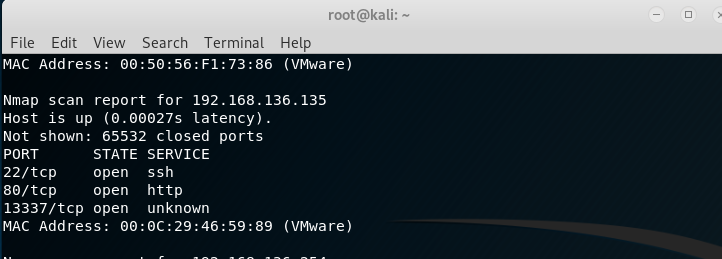
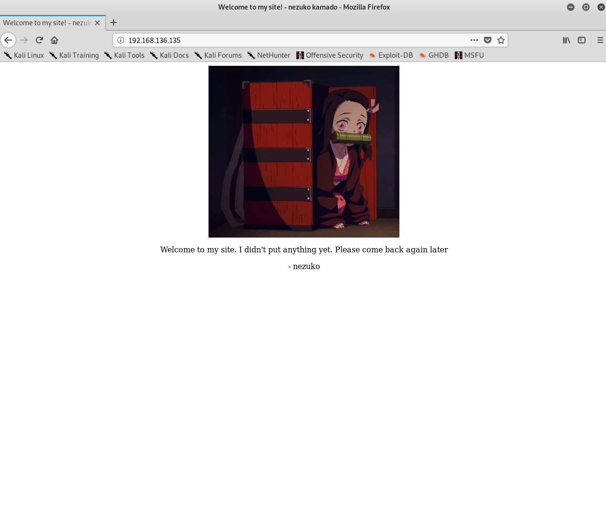
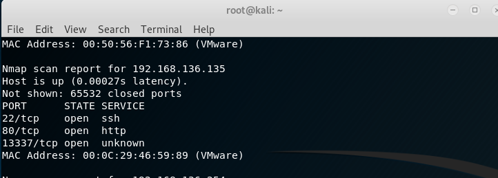
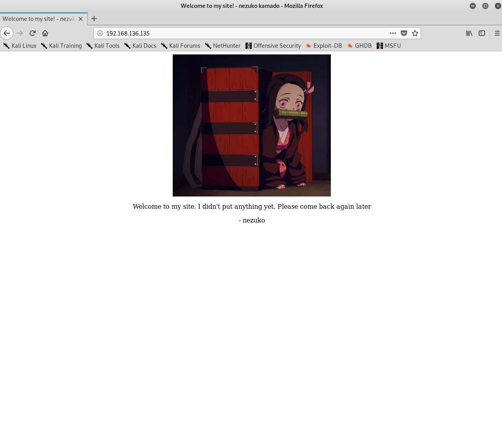

发现开了80和13337，先访问一下80

爆目录，找到一个nothing_here，发现还真就没东西

之后发现字典有问题，尽然连robots.txt都没有。
首先，拿nmap扫一下端口

发现开了80和13337，先访问一下80

爆目录，找到一个nothing_here，发现还真就没东西
之后发现字典有问题，尽然连robots.txt都没有。
NBUW45BAMZZG63JANZSXU5LLN4QDUIDUNBUXGIDJOMQG433UEB2GQZJAOJUWO2DUEBYG64TUEB2G6IDFNZ2W2ZLSMF2GKIC6O5PA====
看起来，想base64，但解不出来，但肯定是base系列，试出来是base32
之后，也没找的什么，也只能去13337端口看看。这个有点坑只能用https，我还以为环境崩了
直接searchsploit webmin，找到cve-2019-15107。能打
稍加修改
之后再弹一个正常点的shell回来，不然用起来实在太难受。
进去之后，发现两个用户，第二个用户里有脚本，每五分钟给第一个用户发送信息，可能为突破点，但该文件只有zenitsu有权限写，尝试切换用户。
/etc/passwd里直接给了第二个用户的hash值，拿hashcat破解

之后尝试切换用户，su zenitsu，显示必须要在正常的bash里才行，于是通过给nezuko的ssh里添加自己的密钥，来通过ssh登录
切换用户之后，发现不能覆盖，查询文件信息，只有append，append进去，等待一会后，root